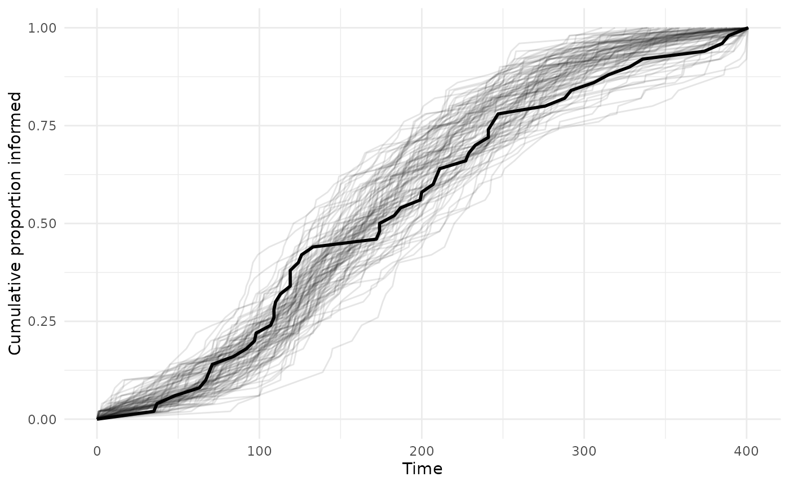
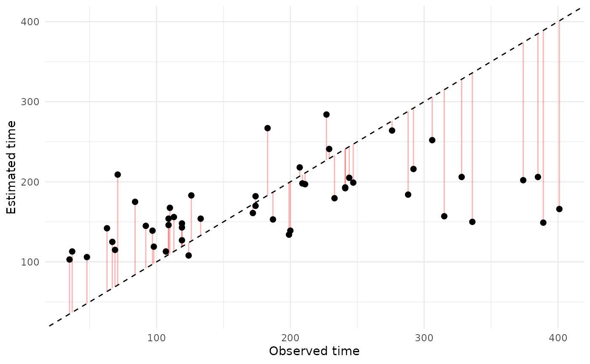

Getting started with STbayes
getting_started.RmdThis vignette will walk you through a simple cTADA analysis pipeline using STbayes. We will use some simulated data from a single diffusion trial. First let’s load the package and import event and network data. It is possible to include co-variates, but not necessary.
Step 1: Importing data
STbayes minimally needs event data and network data. Let’s first look at the event data.
event_data <- STbayes::event_data
head(event_data)
#> # A tibble: 6 × 4
#> # Groups: time [6]
#> id time t_end trial
#> <int> <dbl> <dbl> <dbl>
#> 1 13 35 401 1
#> 2 30 37 401 1
#> 3 31 48 401 1
#> 4 16 63 401 1
#> 5 20 67 401 1
#> 6 38 69 401 1Event data gives information about the spreading of the behavior or information and must contain columns:
-
id: Character or numeric individual identities. -
trial: Character or numeric column indicating which trial the event belongs to. There is only one trial in this data-set. -
time: Integer or float values indicating the time (TADA) or order (OADA) in which the individual was recorded as first informed/knowledgable. If an individual had the event occur prior to the start of the observation period (e.g. pre-trained demonstrator), set as 0. These left censored individuals will not contribute to the likelihood calculation. If an individual never learned during the observation period, set its value . These will be treated as right-censored individuals in the likelihood calculation. -
t_end: Integer or float value representing the duration of the observation period for each trial. If the user observed a population for 30 days,t_end=30. If there are no censored individuals sett_end=max(time).
Next let’s look at the network data:
edge_list <- STbayes::edge_list
head(edge_list)
#> focal other trial assoc
#> 1 1 4 1 1
#> 2 1 11 1 1
#> 3 1 15 1 1
#> 4 1 17 1 1
#> 5 2 6 1 1
#> 6 2 7 1 1This edge list gives the network connections of each individual in a long format. You can give a sparse edge list that doesn’t include all dyads, but importantly, all individuals must be accounted for in the edge list. The first three columns must be:
-
trial: Character or numeric column indicating which trial the networks belong to. -
focal: Character or numeric column of individual identities. -
other: Character or numeric column of individual identities.
Any remaining columns are descriptively named integer or float edge
weights. If you were making a multi-network model, you could add as many
columns as you want. Here, there is only one network named
assoc. Important: for directed networks, the edge
weight describes the influence that other may have on
focal experiencing the target event. For example, if you
wish to model vertical transmission from parent to offspring, this
should contain rows mother, daughter, 0;
daughter, mother, 1. Naming conventions for
identities and trials must be consistent between these two dataframes
(i.e. integers, or matching character strings). The networks dataframe
is used as the reference for all unique IDs, thus each ID must be
included at least once in either the focal or other column. If a dyad is
absent, their connection is assumed to be zero.
Let’s import the data into a format that can be used with other
STbayes functions. I’ve tried to abstract away as much complexity as
possible, but please check the function arguments before sending in the
data. The default values might not be what you want! In this case, it’s
simple—we have no covariates and a single trial with a static network.
You can specify whether the network is directed or undirected using
network_type. This defaults to undirected.
data_list <- import_user_STb(event_data = event_data,
networks = edge_list,
network_type = "undirected")
#> User supplied edge weights as point estimates üìç
#> No ILV supplied.
#> User input indicates static network(s). If dynamic, include 'time' column.
#> ░▒▓█►─═ Sanity check ═─◄█▓▒░
#> User provided data about:
#> 50 individuals across 1 independent diffusions (trials).
#> There were 50 individuals in each trial.
#> User supplied 1 networks: assoc
#> ILV for asocial learning: ILVabsent
#> ILV for social learning: ILVabsent
#> multiplicative model ILV: ILVabsent
#> ü§î Does that seem right to you?This function does quite a bit behind the scenes to process the raw observational data into a named list of variables. I‚Äôve tried to optimize as much as possible so it shouldn‚Äôt take more than a second or two unless you‚Äôre using gigantic networks. Important bits include:
- Validates and standardizes inputs. The function confirms that necessary columns are present, and maps individual and trial identifiers across data frames. The IDs present in the network data are used as the reference for any other data that you supply. For example, if an ID is in the edge list, but not in the event data, it will be automatically added as a censored individual into the event_data. We strongly suggest accounting for all individuals in all data provided to this function to avoid any surprises later on in the analysis.
-
Preprocesses event data. The function sorts events by time
within each trial and assigns a discrete time index that is used to
refer to inter-event intervals. E.g.
timestep=1corresponds to the start of the observation period until the first event. Ifhigh-resmode is used, all durations are set to 1. It also calculates the duration of each of these inter-event intervals. It identifies demonstrators (time==0) and right censored individuals (time>t_end). - Preprocesses network data. If static, a single matrix is used for all times. If dynamic, it aligns edge weights across trials and inter-event intervals. If high resolution, it will collapse data into inter-event intervals, multiplying edge weights by transmission weights and then dividing by duration. When fitting, this term will be multiplied out again by duration, so for linear transmission, this is equivalent to running the likelihood in Stan for every single time-step and greatly speeds up model fitting. We note that this pre-processing is not possible complex transmission models.
- Preprocesses covariates. The function recognizes and stores the roles of ILVs as affecting (or not) the intrinsic rate, the social rate or both rates (multiplicative).
Step 2: Generate a model
Next, we can pass this into a function that automatically creates
Stan code that is customised to your data and modelling desires. Each
time you generate a model, the function will display the default priors
it’ll use. You can specify your own priors using the argument
priors and give it a named list.
model_full <- generate_STb_model(data_list, gq = T, est_acqTime = T)
#> Creating cTADA type model with the following default priors:
#> log_lambda0 ~ normal(-4, 2)
#> log_sprime ~ normal(-4, 2)
#> beta_ILV ~ normal(0,1)
#> log_f ~ normal(0,1)
#> k_raw ~ normal(0,3)
#> z_ID ~ normal(0,1)
#> sigma_ID ~ normal(0,1)
#> rho_ID ~ lkj_corr_cholesky(3)
#> gamma ~ normal(0,1)This returns a very long string containing the code. The argument
gq indicates whether a generated quantities block will be
created. This defaults to TRUE, as it’s needed to output the
log-likelihood of observations for any kind of model comparison later.
The est_acqTime argument tells STbayes to automatically
generate some code to return a posterior distribution of estimated times
of events for each individual.
To quickly check the model code in R, just use cat().
Otherwise, I recommend saving it, as the formatting might need a bit of
cleaning before it’s readable:
write(model_full, file="../data/stan_models/my_first_model.stan")If you want to directly modify the code, go ahead. You can supply the
file path of the model rather than model_obj in the next
call to fit_STb(). Here, we’ll just use the model stored in
the variable.
Function arguments
Here is a summary of each argument to generate_STb_model
for easy reference:
-
data_type=c("continuous_time", "discrete_time", "order")distinguishes between cases where the times of events are known (TADA type models) or only the order of events is known (OADA type models). If exact times of acquisition are known the user can select"continuous_time", creating a cTADA model. If a population was regularly (or irregularly) sampled, so the exact time of events are unknown but the rough interval they occurred in is known, the user should select"discrete_time", which creates a dTADA model. -
veff_ID=c("lambda_0", "s", ...),is used to specify which variables should receive varying effects by individual. For example,veff_ID=c("lambda_0", "s")will create a model that will attempt to fit varying effects for both intrinsic rate and strength of social transmission. It is possible to include other ILVs, if desired. -
model_type=c("full","asocial")specifies whether to create a full model or an asocial model constrained to the intrinsic rate only -
intrinsic_rate=c("constant", "weibull")specifies whether or not the user wishes to use a constant intrinsic rate, or a Weibull shaped rate that can increase or decrease over time. This fits an additional parameter , where indicates a decreasing hazard over time, and indicates an increasing hazard over time. indicates a constant hazard. -
transmission_func=c("standard","freqdep_f", "freqdep_k")specifies whether the model uses simple or complex transmission. -
gqspecifies whether or not a generated quantities block is created in the Stan model. This defaults to true, as the log-likelihood of observations is output using generated quantities and is needed for model comparison. -
est_acqTimespecifies whether estimated acquisition times are also output by the generated quantities block. These are useful for posterior predictive checks, but this argument defaults to false for efficiency in fitting. -
priorsallows users to specify priors for parameters in the format of a named list. Please see the advanced recipes vignette for more details
Step 3: Fit and save the model
We supply the data_list and model_obj for fitting the model:
full_fit <- fit_STb(data_list,
model_full,
parallel_chains = 4,
chains = 4,
cores = 4,
iter = 4000,
refresh=1000
)
#> Detected N_veff = 0
#> ⏳ Sampling...
#> Running MCMC with 4 parallel chains...
#>
#> Chain 1 Iteration: 1 / 4000 [ 0%] (Warmup)
#> Chain 2 Iteration: 1 / 4000 [ 0%] (Warmup)
#> Chain 3 Iteration: 1 / 4000 [ 0%] (Warmup)
#> Chain 4 Iteration: 1 / 4000 [ 0%] (Warmup)
#> Chain 2 Iteration: 1000 / 4000 [ 25%] (Warmup)
#> Chain 1 Iteration: 1000 / 4000 [ 25%] (Warmup)
#> Chain 3 Iteration: 1000 / 4000 [ 25%] (Warmup)
#> Chain 4 Iteration: 1000 / 4000 [ 25%] (Warmup)
#> Chain 2 Iteration: 2000 / 4000 [ 50%] (Warmup)
#> Chain 2 Iteration: 2001 / 4000 [ 50%] (Sampling)
#> Chain 4 Iteration: 2000 / 4000 [ 50%] (Warmup)
#> Chain 4 Iteration: 2001 / 4000 [ 50%] (Sampling)
#> Chain 1 Iteration: 2000 / 4000 [ 50%] (Warmup)
#> Chain 1 Iteration: 2001 / 4000 [ 50%] (Sampling)
#> Chain 3 Iteration: 2000 / 4000 [ 50%] (Warmup)
#> Chain 3 Iteration: 2001 / 4000 [ 50%] (Sampling)
#> Chain 1 Iteration: 3000 / 4000 [ 75%] (Sampling)
#> Chain 4 Iteration: 3000 / 4000 [ 75%] (Sampling)
#> Chain 3 Iteration: 3000 / 4000 [ 75%] (Sampling)
#> Chain 2 Iteration: 3000 / 4000 [ 75%] (Sampling)
#> Chain 1 Iteration: 4000 / 4000 [100%] (Sampling)
#> Chain 1 finished in 18.3 seconds.
#> Chain 3 Iteration: 4000 / 4000 [100%] (Sampling)
#> Chain 4 Iteration: 4000 / 4000 [100%] (Sampling)
#> Chain 3 finished in 19.1 seconds.
#> Chain 4 finished in 19.1 seconds.
#> Chain 2 Iteration: 4000 / 4000 [100%] (Sampling)
#> Chain 2 finished in 19.6 seconds.
#>
#> All 4 chains finished successfully.
#> Mean chain execution time: 19.0 seconds.
#> Total execution time: 19.9 seconds.
#> ü´¥ Use STb_save() to save the fit and chain csvs to a single RDS file. Or don't!This function calls cmdstanr‚Äôs $sample(), and you can add any extra valid arguments to pass on here. In this call, I‚Äôve made sure that we run 4 chains in parallel for 4000 iterations, and only to update us on progress every 1000 iterations. By default, fit_STb() will do iter/2 worth of warmup, and iter/2 worth of sampling. Fitting can take anywhere from seconds to hours depending on your computer and the amount of data. Fitting this dataset should be quick. If it‚Äôs very slow, you might want to try running this on your friend‚Äôs computer. I‚Äôve tried to make things reasonably efficient, but have not parallelized the model block yet.
I strongly recommend using the convenience function below to save the
output after fitting. If you only save the fit object to an rda using
something like save(), it will not include the data output
from chains, making it useless. STb_save saves these
alongside the fit in a single file:
STb_save(full_fit, output_dir = "cmdstan_saves", name="my_first_fit")
#> Fit & chains successfully saved üíæ
#> You can load fit again with üëâ readRDS('cmdstan_saves/my_first_fit.rds') If you don‚Äôt provide a name, it will use the name of the object.
Step 4: Viewing model output
We can inspect the parameter estimates using the convenience function below:
STb_summary(full_fit, digits = 3)
#> Parameter Median MAD CI_Lower CI_Upper ess_bulk ess_tail Rhat
#> 1 log_lambda_0_mean -6.871 0.453 -7.798 -6.007 4289.196 4170.766 1.000
#> 2 log_s_prime_mean -5.372 0.173 -5.728 -5.033 4222.179 4073.156 1.001
#> 3 lambda_0 0.001 0.000 0.000 0.002 4289.223 4170.766 1.000
#> 4 s 4.536 2.386 1.280 12.016 3745.039 4147.067 1.001
#> 5 percent_ST[1] 0.818 0.047 0.712 0.892 3745.049 4147.067 1.001The most important output are the intrinsic rate (lambda_0), and the
relative strength of social transmission (s), whose interpretations are
the same as the NBDA package. The relative strength of social
transmission (s = s_prime / lambda_0) is generally what we’re after. %ST
for network
is reported as percent_ST[n]. This is a single-network
model, thus percent_ST[1] is the estimated percentage of
events that occurred through social transmission. The [1] refers to the
“assoc” network, as we’ve only given a single network. If you fit a
multi-network model, all networks will have an estimate. For a number of
reasons, STbayes actually fits lambda_0 and social transmission rate
(s_prime) on the log scale. The linear transformation of s_prime itself
usually isn’t reported and is excluded from the output, but you could
calculate it yourself from the fit.
At this point, you are just dealing with a cmdstanr fit, so if you have your own pipeline, adios! However, I have provided a few more useful functions for posterior predictive checks and model comparison.
Step 5: Posterior predictive checks
STbayes makes it relatively painless to perform posterior predictive checks (PPC) without having to manually simulate data after the fitting process. PPC are important to assess whether or not the model reproduces features of the observed data and make sure that your likelihood reasonably matches the data-generating process.
Above, we used the argument est_acqTime=T. As the Stan
model runs, in each iteration it will generate an estimated event time
based on the parameter values for that iteration. With this, we can make
two types of PPC.
Cumulative diffusion curves
We can plot the posterior distribution of cumulative diffusion curves and compare them with the observed curve. First, we create a dataframe for the cumulative number of individuals who experienced an event.
plot_data_obs <- event_data %>%
filter(time > 0, time <= t_end) %>% # exclude demonstrators (time == 0) and censored (time > t_end)
group_by(trial) %>%
arrange(time, .by_group = TRUE) %>%
mutate(
cum_prop = row_number() / n(),
type = "observed"
) %>%
select(trial, time, cum_prop, type) %>%
ungroup()
# add in 0,0 starting point
plot_data_obs <- bind_rows(
plot_data_obs,
plot_data_obs %>%
distinct(trial) %>%
mutate(time = 0, cum_prop = 0, type = "observed")
) %>%
arrange(trial, time)Next, we can extract the draws of estimated acquisition times, excluding warm-up iterations, as a data-frame. We can then pivot it into a long format and calculate the cumulative curves for each draw as we did our observed data. Note that I thinned the draws for the sake of visualization.
draws_df <- as_draws_df(full_fit$draws(variables = "acquisition_time", inc_warmup = FALSE))
# pivot longer
ppc_long <- draws_df %>%
select(starts_with("acquisition_time[")) %>%
pivot_longer(
cols = everything(),
names_to = c("trial", "ind"),
names_pattern = "acquisition_time\\[(\\d+),(\\d+)\\]",
values_to = "time"
) %>%
mutate(
trial = as.integer(trial),
ind = as.integer(ind),
draw = rep(1:(nrow(draws_df)), each = length(unique(.$trial)) * length(unique(.$ind)))
)
#> Warning: Dropping 'draws_df' class as required metadata was removed.
# thin sample for plotting
sample_idx <- sample(c(1:max(ppc_long$draw)), 100)
ppc_long <- ppc_long %>% filter(draw %in% sample_idx)
# build cumulative curves per draw
plot_data_ppc <- ppc_long %>%
group_by(draw, trial, time) %>%
summarise(n = n(), .groups = "drop") %>%
group_by(draw, trial) %>%
arrange(time) %>%
mutate(cum_prop = cumsum(n) / data_list$Q)
# add in 0,0 starting point
plot_data_ppc <- bind_rows(
plot_data_ppc,
plot_data_ppc %>%
distinct(trial, draw) %>%
mutate(time = 0, cum_prop = 0, type = "ppc")
) %>%
arrange(trial, time)
# plot it
ggplot() +
geom_line(data = plot_data_ppc, aes(x = time, y = cum_prop, group = interaction(draw, trial)), alpha = .1) +
geom_line(data = plot_data_obs, aes(x = time, y = cum_prop), linewidth = 1) +
labs(x = "Time", y = "Cumulative proportion informed", color = "Trial") +
theme_minimal()
This looks pretty good, the observed curve falls within the variation of the posterior draws. If the observed data fell outside of the draws, you might want to rethink the model specification, whether any influential variables have been excluded, and whether there might be complex transmission processes.
Estimated vs. observed acquisition times
For each individual, you could also compare the estimated versus
observed event times. STbayes’ function extract_acqTime
conveniently extracts the times for each individual and re-aligns them
with their identities.
acqdata = extract_acqTime(full_fit, data_list)
ggplot(acqdata, aes(x = observed_time, y = median_time)) +
geom_segment(
aes(x = observed_time, xend = observed_time, y = median_time, yend = observed_time),
color = "red",
alpha = 0.3) +
geom_point(size = 2) +
geom_abline(intercept = 0, slope = 1, color = "black", linetype = "dashed") +
labs(x = "Observed time", y = "Estimated time") +
theme_minimal()
Due to stochastic variation in orders of acquisition between draws, the cumulative curve approach is probably more useful as a PPC.
Step 6: Model comparison
Often, you’ll want to make sure that a model with social transmission
is more predictive than a model that excludes it. First, let’s refit
using a constrained model that only includes an intrinsic rate by using
the argument model_type="asocial" when generating a model.
For a fair comparison, make sure the chains and iterations are identical
to the full model fit.
model_asoc = generate_STb_model(data_list, model_type="asocial")
#> Creating cTADA type model with the following default priors:
#> log_lambda0 ~ normal(-4, 2)
#> log_sprime ~ normal(-4, 2)
#> beta_ILV ~ normal(0,1)
#> log_f ~ normal(0,1)
#> k_raw ~ normal(0,3)
#> z_ID ~ normal(0,1)
#> sigma_ID ~ normal(0,1)
#> rho_ID ~ lkj_corr_cholesky(3)
#> gamma ~ normal(0,1)
asocial_fit = fit_STb(data_list,
model_asoc,
parallel_chains = 4,
chains = 4,
cores = 4,
iter = 4000,
refresh=1000)
#> Detected N_veff = 0
#> ⏳ Sampling...
#> Running MCMC with 4 parallel chains...
#>
#> Chain 1 Iteration: 1 / 4000 [ 0%] (Warmup)
#> Chain 1 Iteration: 1000 / 4000 [ 25%] (Warmup)
#> Chain 2 Iteration: 1 / 4000 [ 0%] (Warmup)
#> Chain 2 Iteration: 1000 / 4000 [ 25%] (Warmup)
#> Chain 3 Iteration: 1 / 4000 [ 0%] (Warmup)
#> Chain 3 Iteration: 1000 / 4000 [ 25%] (Warmup)
#> Chain 4 Iteration: 1 / 4000 [ 0%] (Warmup)
#> Chain 1 Iteration: 2000 / 4000 [ 50%] (Warmup)
#> Chain 1 Iteration: 2001 / 4000 [ 50%] (Sampling)
#> Chain 2 Iteration: 2000 / 4000 [ 50%] (Warmup)
#> Chain 2 Iteration: 2001 / 4000 [ 50%] (Sampling)
#> Chain 3 Iteration: 2000 / 4000 [ 50%] (Warmup)
#> Chain 3 Iteration: 2001 / 4000 [ 50%] (Sampling)
#> Chain 4 Iteration: 1000 / 4000 [ 25%] (Warmup)
#> Chain 1 Iteration: 3000 / 4000 [ 75%] (Sampling)
#> Chain 2 Iteration: 3000 / 4000 [ 75%] (Sampling)
#> Chain 4 Iteration: 2000 / 4000 [ 50%] (Warmup)
#> Chain 4 Iteration: 2001 / 4000 [ 50%] (Sampling)
#> Chain 3 Iteration: 3000 / 4000 [ 75%] (Sampling)
#> Chain 4 Iteration: 3000 / 4000 [ 75%] (Sampling)
#> Chain 1 Iteration: 4000 / 4000 [100%] (Sampling)
#> Chain 2 Iteration: 4000 / 4000 [100%] (Sampling)
#> Chain 3 Iteration: 4000 / 4000 [100%] (Sampling)
#> Chain 4 Iteration: 4000 / 4000 [100%] (Sampling)
#> Chain 1 finished in 0.5 seconds.
#> Chain 2 finished in 0.4 seconds.
#> Chain 3 finished in 0.5 seconds.
#> Chain 4 finished in 0.5 seconds.
#>
#> All 4 chains finished successfully.
#> Mean chain execution time: 0.5 seconds.
#> Total execution time: 0.6 seconds.
#> ü´¥ Use STb_save() to save the fit and chain csvs to a single RDS file. Or don't!If you are familiar with loo or have your own pipeline, then you can use that to compare these models. STbayes provides a convenient function for performing model comparison. You can provide as many models as you want, here we just compare these two.
loo_output = STb_compare(full_fit, asocial_fit, method="loo-psis")
#> Calculating LOO-PSIS.
#> Comparing models.
#> Calculating pareto-k diagnostic (only for loo-psis).
print(loo_output$comparison, simplify = FALSE)
#> elpd_diff se_diff elpd_loo se_elpd_loo p_loo se_p_loo looic
#> full_fit 0.0 0.0 -290.7 6.2 2.0 0.5 581.5
#> asocial_fit -21.3 5.3 -312.0 3.9 0.3 0.0 624.1
#> se_looic
#> full_fit 12.4
#> asocial_fit 7.7If you are not familiar with leave-out-out cross validation, I strongly suggest reading up on it, but the TLDR is that you should pay attention to the elpd_diff and se_diff columns. A model is credibly more predictive if the standard error in differences of ELPD does not cross 0. Here, -21.2 + 5.3 < 0, so we can conclude the full model is more predictive of out-of-sample data than an asocial only model. If you would rather see this graphically:
comparison_df <- as.data.frame(loo_output$comparison)
comparison_df$model <- rownames(comparison_df)
ggplot(comparison_df, aes(x = reorder(model, elpd_diff), y = elpd_diff)) +
geom_point(size = 3) + #elpd_diff
geom_errorbar(aes(ymin = elpd_diff - se_diff,
ymax = elpd_diff + se_diff), width = 0.2) + #SE of elpd diff
coord_flip() +
labs(x = "Model", y = "ELPD Difference", title = "Model Comparison") +
theme_minimal()PSIS-LOO is an approximation of LOO, and observations with pareto-k diagnostic values >.7 may indicate that the approximation is unreliable. The function above will warn you if that is the case, and you can visually inspect these diagnostics like so:
pareto_df = as.data.frame(loo_output$pareto_diagnostics)
ggplot(pareto_df, aes(x=observation, y=pareto_k, color=model))+
geom_point() +
scale_color_viridis_d(begin=0.2, end=0.7)+
geom_hline(yintercept = 0.7, linetype="dashed", color="orange")+
geom_hline(yintercept = 1, linetype="dashed", color="red")+
labs(x="Observation", y="Pareto-k value", title="Pareto-k diagnostics")+
theme_minimal()
All of the pareto-k values are below the danger zone.
Conclusion
These are the basics of using STbayes. You only need event data and network data for a minimal model. However, the package is flexible and you can make use of many other types of data and formulations. Please see the “Advanced recipes” vignette for demonstrations of multi-network models, dynamic network models, and models with ILVs, transmission weights, varying effects, complex transmission, and marginalizing over edge-weight uncertainty.